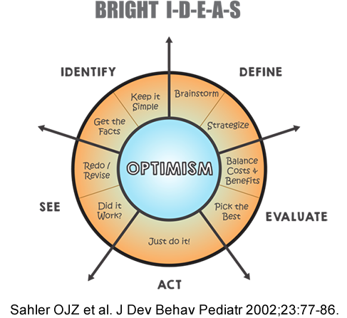

Module: Coping and body image/appearance
Vanessa L. Malcarne, PhD, Professor, Department of Psychology, San Diego State University, San Diego, CA with input from Mary Alore, MBA
Clearly, when one has a chronic disease such as scleroderma there are many things to consider, and many challenges. But we all know people who seem to manage even very difficult situations with great skill and success. We call these people “effective copers.” You can become an effective coper as well, by using the BRIGHT IDEAS approach presented here (Sahler et al., 2002, 2005).
This figure shows ways of coping with problems that you can use every day.
BRIGHT
The BRIGHT means that you should look at problems with an optimistic, or positive, “can-do” attitude. It’s easy to become overwhelmed with problems when you have a chronic illness. Sometimes it’s hard to feel optimistic. It’s okay if you’re not completely confident in your abilities at the beginning. Working through the five steps that are shown in the “IDEAS” section should build your confidence as you begin to have success in coping with specific problems.
If you’re not feeling BRIGHT and optimistic, try using the steps anyway. You can also turn to other people for encouragement. Family and friends may be able to offer support for the ways in which you are changing things for the better. Also, don’t forget to look to your healthcare team for encouragement. Finally, a professional mental health therapist with experience in working with people with chronic illness, and in solving problems, can be very helpful in nurturing a sense of hope and optimism.